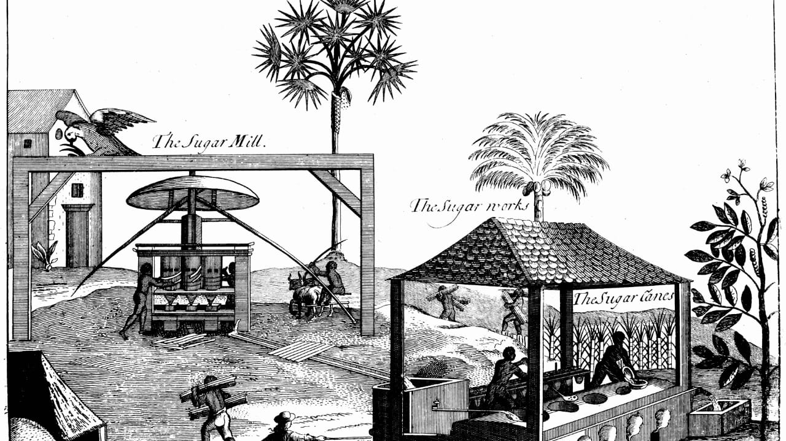
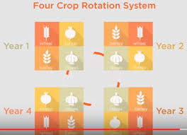
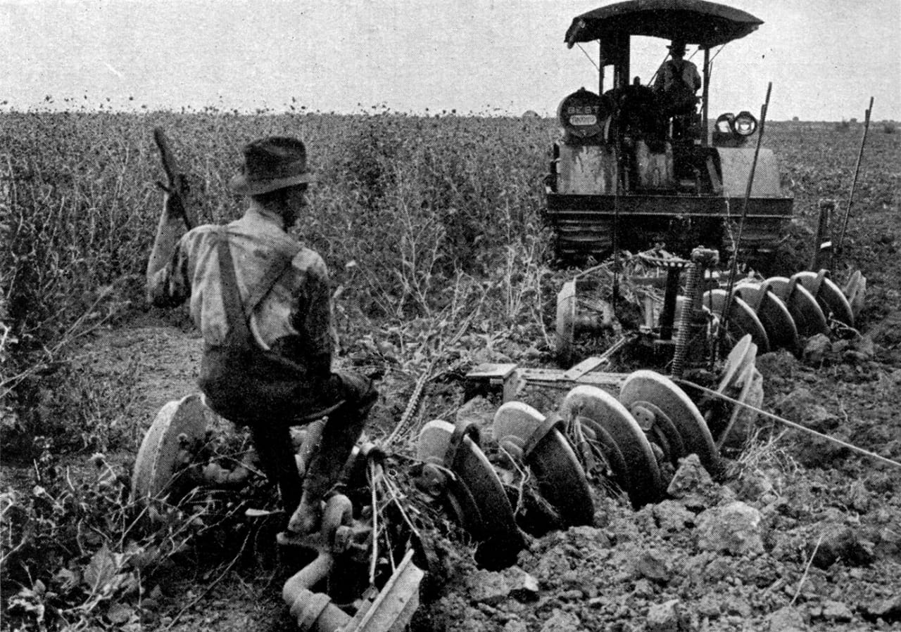
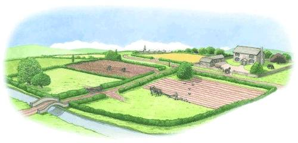

-Come One, Come All-
--------To the-------
--- British Agricultural Exhibition-------
Welcome to 'BAEI'.
Lets Start with our Info!
Our annual historical exhibition will take place on August 31, 1906. This exhibition is heald to teach one another about how our agriculture has evolved over the past 200 years. Unlike the previous year, the exhibition will take place at the main workhouse at 2 pm. The admission fee will be £5.

Two people who greatly contributed to changes in the Agrarian Revolution
Charles Townsend: Introduced turnips as fodder crops and the Norfolk four-course rotation system. This rotation eliminates the use of fallow fields as you can grow crops on the field all year round.
Robert Bakewell: Use of selective breeding to develop new breeds of cattle that are meatier. Bakewell separated males from females, allowing mating only deliberately and specifically.
Four changes in Farming Methods between 1700 and 1900
Change in the Rotation System:
Before 1700, the open field system was used. This system consisted of three fields which were periodically and systematically used. Every year two fields were used and the other was left for fallow. Fallow fields are left to replenish the soil used by the crops before. But toward the end of the 1800s, the population was booming more than before. Agriculture was becoming more commercial to feed the growing population hence the system had to change to reflect that. The Norfolk four-course rotation system was created by Charles Townsend. It revolves around four crops planted on a piece of land in the order of wheat-turnips-barley-clover. This system has revolutionized the way commercial farming is done.

Change in the machinery used:
Before the 1800s, farming was mainly done by hand or by horses pulling carts and ploughs. A couple of years later, an evolution in the iron industry took place. Because of this evolution, people during that time began to develop ways in which they used this iron to build tools and different machinery to help in the production of crops. Today many machines are still horse-powered and reduce the effort used to plant and rear crops. These machines also reduce the number of men who need to work in the field. For example, the planting usually done by ten men can now be completed by two.

Located in the previous section, is an image that shows an example of the machinery that is now used instead of our hands.
Change in the Type of Farming
Before 1750, most people were subsistence farmers meaning they only produced what was needed to survive. This was all they could farm on the land they had. After 1750 however, the population began booming. Because of this people began to move to urban areas in hordes. In 1750, 8% of the population lived in cities but by 1900 this number has increased to 87%. The population has moved from 7 million people to 37 million in 1900. And so the type of farming had to change to feed this huge amount of hungry, hungry people.Hence the birth of commercial farming. Along with parliamentary, new methods and inventions, commercial farming has taken the forefront of agriculture. Come learn more at our exhibition.
Change in how the land was shared between users:
In the 1600 - 1700s, there was no separation between the land used by everyone. This caused a lot of chaos and arguments between farmers. These arguments wouldn’t allow maximum productivity in the workspace as instead of working, everyone would argue about which piece of land was theirs. Then came the idea of having enclosures. Farmers would no longer have to wonder which part of the land was theirs as each piece of land had its own enclosure. Enclosures also allowed farmers to do selective breeding.
